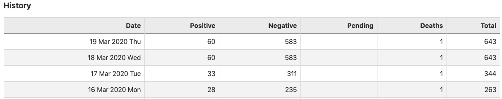

SC: Data not updating
I noticed that the SC counts didn’t update last night (https://covidtracking.com/data/state/south-carolina/):

Is there some way to verify that this was due to the underlying source (currently https://scdhec.gov/monitoring-testing-covid-19) not updating rather than some collection bug?
Similarly, is it possible to get a sense of how often underlying source pages are changing? I’m not sure if the SC monitoring page is being updated multiple times daily or not, and I thought something collected by the current crawlers might give me that sense.
eric-czech added the label Data quality on March 20, 2020 at 5:41 am
hammer closed the issue on March 20, 2020 at 6:17 am
@eric-czech the current count for SC is 81 so looks like this was due to either SC reporting late or us not checking it near enough to 4 pm. It’s an acknowledged caveat with our data: https://covidtracking.com/newsroom-expert-faq. We do keep a log of each time a state has been checked, so we could conceivably generate a report on which states update multiple times per day, but that’s not something we do currently nor do we plan to do it soon.